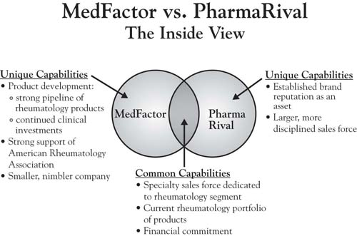

Step 9 involves an analysis of market dynamics depicted in the three circles. This step recognizes that markets are constantly moving, and in potentially predictable ways. Recall from Chapter 8 "Dynamic Aspects of Markets" that changes in the market can be reflected one of two ways in the model. First, the circles move, often approaching one another as the offerings of the different competitors become more similar and customer needs become more well known as a product or service category matures. Second, though, is the flow of value through the circles, which helps illustrate the typical competitive innovation-imitation cycle of healthy markets. In the case of MedFactor and its drug OptiMod, the market dynamics analysis would suggest that once the firm is able to establish its unique Area A with doctors, there is a very real possibility that its advantages can be eroded over time as its competitors seek to imitate its unique advantages. A careful exploration of the forces that evolve the market toward commoditization is imperative, as patent protection is limited and other firms are likely to be aggressive in their imitation of a demonstrated competitive advantage.
Figure 9.6 The Inside View—A Brief Version of Steps 6 and 7: Overlapping Capabilities, Resources, and Assets
